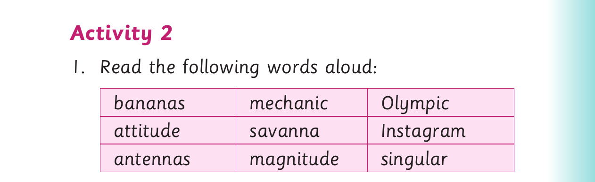

Reading long words - Activity 2
2. Read the following sentences aloud: (a) My brother opened the window. (b) I like butter on bread. (c) My friend likes guava juice. (d) Carrot is good for health. (e) I have lost my pencil.

Activity 2 1. Read the following words aloud: bananas mechanic Olympic attitude savanna Instagram antennas magnitude singular
2. Read the following sentences aloud: (a) My brother likes bananas. (b) I will be a mechanic when I grow up. (c) We went to India for the Olympics. (d) You will find zebras in the savanna. (e) We now use satellite dishes instead of antennas. (f) The earthquake had a low magnitude. (g) I know the singular form of that word.